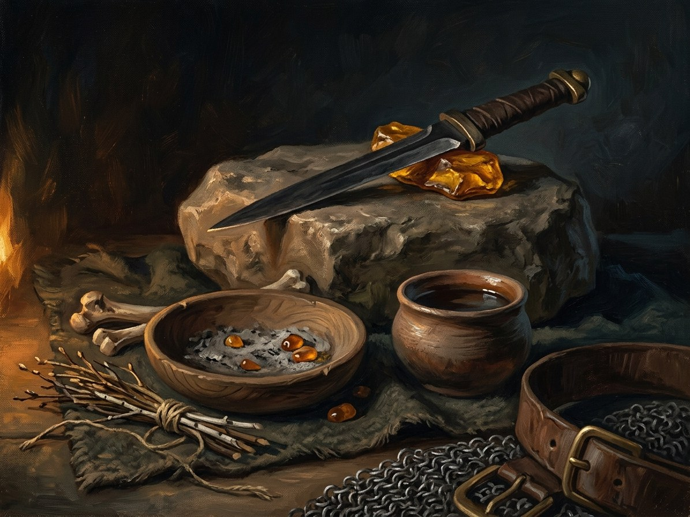

Sandėris (bargain)¶
What it is¶
Sandėris: bought power. A deal worded precisely, with the Shadow-Seller (a shard of Velnias) or a lesser spirit, binding the parties only by the letter, never by the Three Laws.
Sandėris (bargain)

Sandėris (bargain) · school¶
Tipas |
school |
Family |
bought |
Pastaba |
Sandėris: transactional supernatural contract sealed with an explicit price. |
Who can use it (path & tier)¶
Anyone desperate (tier 0). Known bargainers: Jogaila (1380: the „easy way“ of the trap), Skirgaila (Krėva), and later Vytautas (Book II’s Vorskla vision; Book IV’s crown). Either party may initiate; the human is rarely informed.
How it works (medium, words, timing)¶
Velnias never cheats; he drafts. The deal is free at first; the „thread“ comes later, a small favour then a larger one. Signs of a bargain in progress: sounds die (the Breath of the Void), warm coins, a figure at the edge of the firelight, the three black stones.
Kaina¶
Paid later, with interest. The price is „something worth more than you thought“. For Jogaila: his line inherits the crown and loses the land. For Skirgaila: to be used and discarded. Deferred costs compound.
Limits & counters¶
Beatable only by cleverness, never strength or faith: the folk crop-division tale (ATU 1030) is the model, with the peasant planting turnips and rye. A Praurimė seer can see through the Shadow-Seller’s illusions, at the cost of blindness. The Shadow-Seller alone can lie; mortals cannot.
Folk basis [Historical record]¶
[Historical record]. There is no recorded „bargain“ system. The folk base is tales of the devil’s contract, the clever peasant who cheats Velnias (ATU 1030) and the aitvaras-keeper whose house burns if the spirit is not fed; the treasure that is Velnias’s. The saga makes the folk figure literal.
Notable practitioners¶
Jogaila, Skirgaila; Vytautas’s Vorskla vision (1399); Žygimantas (Book V ch. 19). Henė admires the 1411 Toruń clause „for the lifetimes of king and prince“ as a sentence the Devil himself could not draft more cleanly (Book III ch. 25). Book I ch. 19 is titled „Velnio Sandėris“; Book IV ch. 22 „Paskutinis Sandėris“ (Lutsk).
Ryšiai
Patrons: Šešėlių Pardavėjas / Henė
Practitioners: Jogaila (1380–…) — tier 0 · Skirgaila (1382–…) — tier 0
- School
- Bought power. Binds by the letter, never by the Three Laws
- Tier
- Tier 0: anyone desperate. Either party may initiate, but the human is rarely informed
- Casting
- A deal worded precisely. Velnias never cheats, he drafts. Free at first, the thread comes later
- Components
- The letter of the deal; a figure at the edge of the firelight, warm coins, three stones
- Cost
- Paid later with interest: something worth more than you thought. Deferred costs compound
- Duration
- Until the bargain is collected: Jogaila's ran from 1380 to 1434
- Limits
- The Shadow-Seller alone can lie and make illusions. A bargain can say only what it says
- Counters
- Cleverness, never strength or faith (the crop-division tale). A Praurimė seer sees through illusions at the cost of blindness. Refusal: Vytautas at Lutsk
Anything, worded precisely. The easy way: a secret treaty, a key to a dungeon, a poison that leaves no trace. Every gift comes with a thread.
The threads. A small favour, then a larger one. Jogaila's line inherits the crown and loses the land; Skirgaila is used and discarded.
Out-drafting. Plant turnips, then rye. But beating the devil does not protect you from people.
Refusal. A word not yet spoken cannot be bought. The crown turns to leaves.
Sąsajos¶
graph LR
bargain["Sandėris (bargain)"]
jogaila["Jogaila"]
shadow_seller["Šešėlių Pardavėjas / Henė"]
skirgaila["Skirgaila"]
shadow_seller -->|Patron of| bargain
jogaila -->|Practises| bargain
skirgaila -->|Practises| bargain
style bargain stroke-width:3px